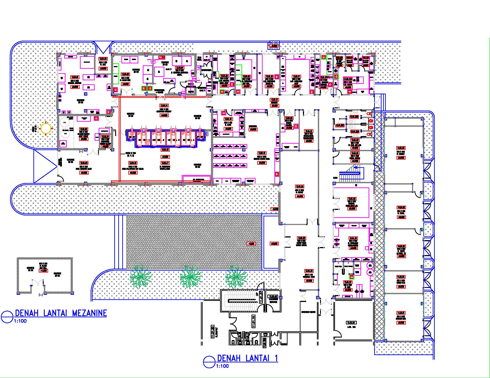

i
Informasi Fasilitas
Data fasilitas pada prototype ini berfungsi sebagai contoh penyajian identitas, lokasi ilustratif, dan status fasilitas.
Informasi Fasilitas
Halaman ini menampilkan contoh identitas dan informasi fasilitas pembangkit listrik tenaga nuklir sebagai bagian dari prototype sistem NucleoMonitor.
Ilustrasi berikut digunakan untuk memperkenalkan tata letak fasilitas dalam contoh sistem. Gambar ini bukan denah operasional atau dokumen teknis fasilitas nyata.

Tabel berikut berisi data contoh yang digunakan untuk demonstrasi.
| No. | ID Fasilitas | Nama Fasilitas | Lokasi Contoh | Status Simulasi |
|---|---|---|---|---|
| 1 | SEN-001 | PLTN Edukasi Nusantara | Lokasi A | Beroperasi (Contoh) |
| 2 | SEN-002 | Fasilitas Edukasi B | Lokasi B | Pemeliharaan (Contoh) |
| 3 | SEN-003 | Fasilitas Edukasi C | Lokasi C | Tidak Aktif (Contoh) |
Catatan: Seluruh nama, ID, lokasi, dan status dalam tabel merupakan data fiktif untuk demonstrasi. Data tidak menunjukkan kondisi fasilitas PLTN yang sebenarnya.
Data fasilitas pada prototype ini berfungsi sebagai contoh penyajian identitas, lokasi ilustratif, dan status fasilitas.
Halaman ini membantu pengguna memahami bagaimana data fasilitas dapat disusun dalam sebuah sistem informasi berbasis web.